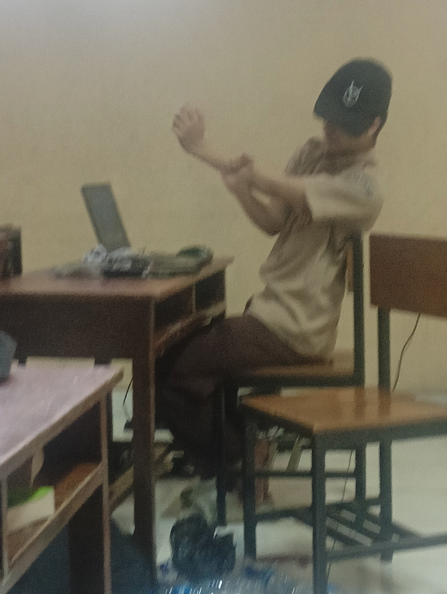

Halo nama saya iqbal husni saleem
Junior UI/UX Design dan
bersekolah di SMK
Halo, saya iqbal. Saya berasal dari Jakarta, Jawa barat. Saya memulai belajar /UX Design tahun ini dengan mengikuti pembelajaran dari sekolah dan dari sumber internet. Projek pertama saya yaitu mendesain ulang tampilan aplikasi untuk tugas sekolah
Karya dan Projek
Aplikasi Budaya K3

Budaya K3 adalah aplikasi yang digunakan
untuk memberikan materi dan pembelajaran
tentang Budaya K3 di Dunia Kerja